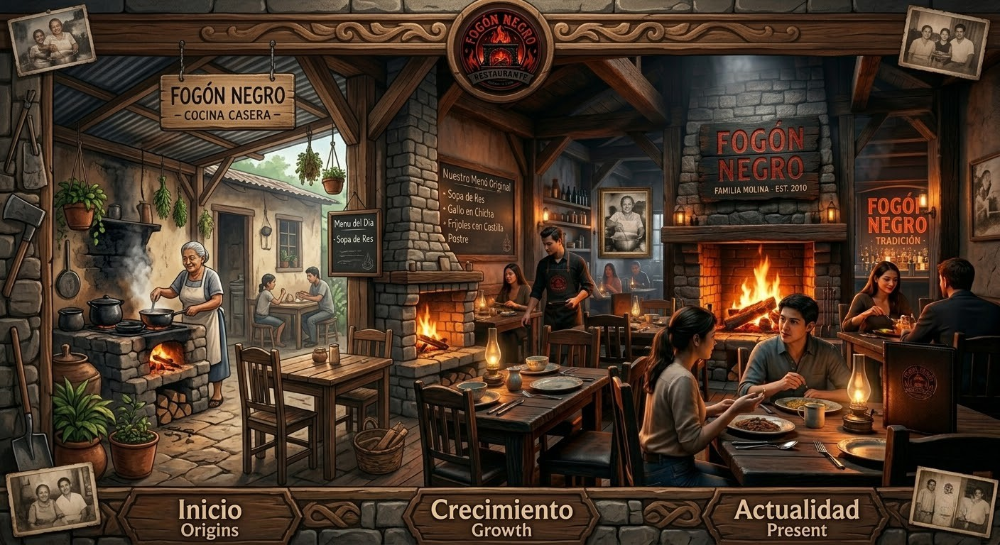
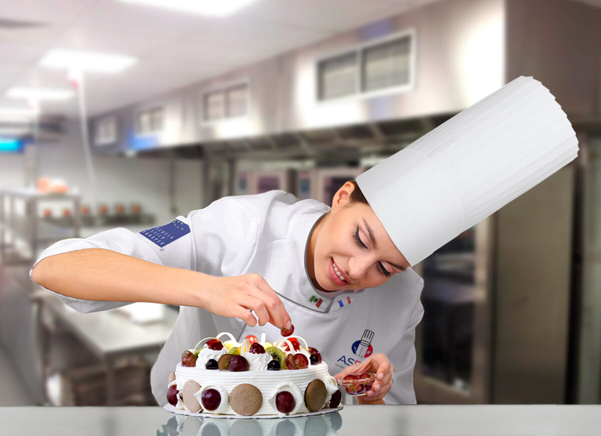
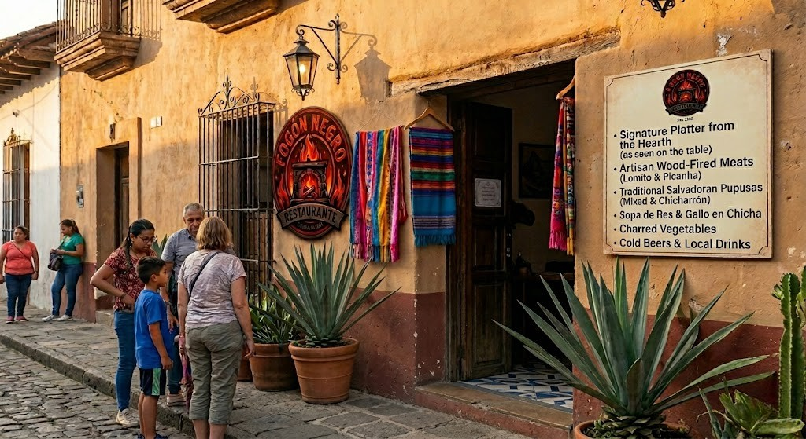
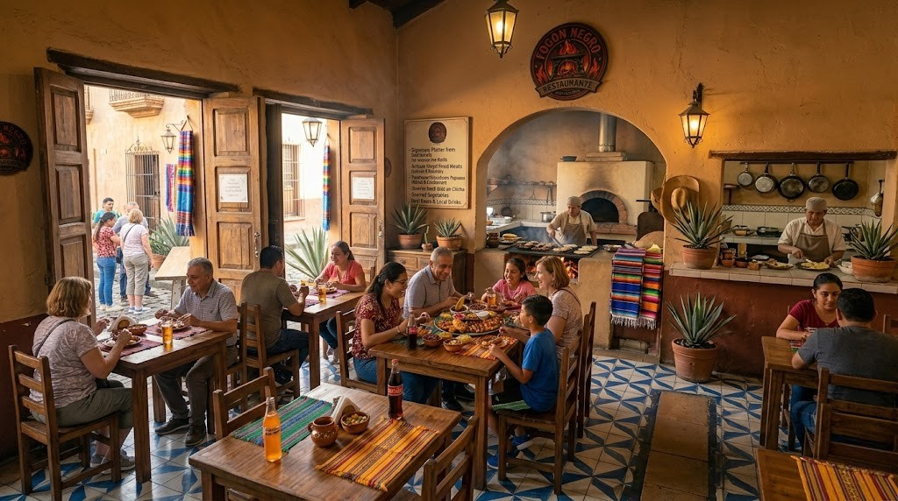

Conócenos: nuestra historia, nuestros valores y la pasión detrás de cada plato.
Fogón Negro nació en el año 2010 en el corazón de San Salvador, impulsado por la visión de la familia Molina, quienes desde pequeños crecieron rodeados del aroma del fogón de leña en la cocina de su abuela.
Lo que comenzó como un pequeño comedor de barrio con tres mesas y un menú de cuatro platillos, hoy se ha convertido en uno de los restaurantes más queridos de la capital salvadoreña, reconocido por mantener viva la tradición culinaria con técnicas artesanales y sabores que evocan el campo y la infancia.
El nombre "Fogón Negro" hace honor a ese fogón de piedra que marcó a fuego (literalmente) la memoria gastronómica de nuestra familia fundadora, y que hoy es el corazón de nuestra cocina.

Brindar una experiencia gastronómica auténtica y de alta calidad, ofreciendo platos de la cocina salvadoreña tradicional preparados con ingredientes frescos, técnicas artesanales y un servicio cálido que haga sentir al cliente como en casa.
Ser el restaurante salvadoreño más reconocido a nivel nacional por su autenticidad, excelencia culinaria y compromiso con las tradiciones gastronómicas del país, expandiéndonos hacia nuevas regiones sin perder nunca nuestra esencia.
Chef Principal & Fundador
20 años de experiencia en cocina salvadoreña.

Chef de Repostería
Especialista en postres y dulces tradicionales.
Gerente General
Garantiza que cada visita sea memorable.
Un ambiente rústico, cálido y acogedor pensado para que te sientas como en casa.

